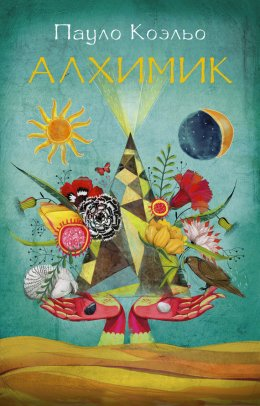
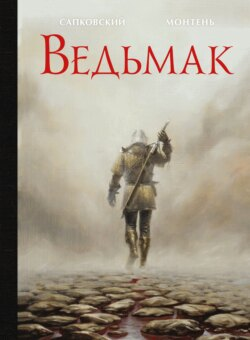

<!Doctype html>
<html lang="en">
    <head>
        <title>Балашов Никита</title>
        <meta charset="UTF-8">
        <meta name="viewport" content="width=device-width, initial-scale=1.0">
        <link rel="stylesheet" href="/src/style.css">
    </head>
</html>
<body>
    <header>
        <nav class="navbar open">
            <div>
                
            </div>
            <ul>
                <li><a href="index.html">Home</a></li>
                <li><a href="video.html">Video</a></li>
                <li><a href="music.html">Music</a></li>
                <li><a href="#">Book</a></li>
            </ul> 
            <div>
                <a href="https://ku.edu.kz" class="entry">Entry</a>
            </div>
        </nav>
    </header>
    <main class = "container-book">
        <section class = "book1">
            
            <a href = "./src/public/book/Alchemist.pdf">Download book</a>
            <p> "The Alchemist" is the most famous novel by Brazilian 
                writer Paulo Coelho, the favorite book of millions of 
                people around the world.
                In youth, people are not afraid to dream, everything
                seems possible to them. But time passes, and a mysterious 
                force begins to suggest to them that their desires are unfeasible.
                "To achieve the embodiment of one's Destiny is the 
                only true duty of a person...", says Paulo Coelho. </p>
        </section>
        <section class = "book2">
            
            <a href = "./src/public/book/Harry Poter.pdf">Download book</a>
            <p> Eleven-year-old orphan boy Harry Potter lives in his 
                aunt's family and does not even suspect that he is 
                a real wizard. But one day an owl arrives with a letter 
                for him, and Harry's life changes forever. He finds out 
                that he is enrolled in the Hogwarts School of Witchcraft 
                and Wizardry, finds out the truth about the mysterious 
                death of his parents, and as a result he manages to 
                uncover the secret of the Philosopher's stone. </p>
        </section>
        <section class = "book3">
            
            <a href = "./src/public/book/Vedmak.pdf">Download book</a>
            <p> GERALT FROM RIVIA arrived in Vyzima, interested in the 
                offer, which was mentioned in scrolls hung throughout 
                the kingdom – 3,000 oren to the one who would disenchant 
                the daughter of King Foltest.The princess died on the 
                same day she was born, turned into a ghoul after death, 
                and for more than ten years she has been getting out 
                of the crypt on a full moon and drinking human blood.
                Many scientists, hermits, priests, knights and sorcerers 
                tried to destroy evil witchcraft, but all failed.Geralt 
                must not only complete a delicate mission, but also 
                unravel the intrigues of the rulers of Vyzima. Treachery 
                and thirst for power have no boundaries, and the Witcher 
                knows this well. </p>
        </section>
    </main>
    <footer class="col-12">
        <div class="col-10 align-item-center">
            <a href="https://www.youtube.com/watch?v=8ybW48rKBME">
                
            </a>
            <a href="">
                
            </a>
            <a href="" >
                
            </a>
        </div>
    </footer>
</body>
</html>